/* teun-hocks - proofs */
12 plates. Deterministic overlays rendered by the composition-analysis skill.
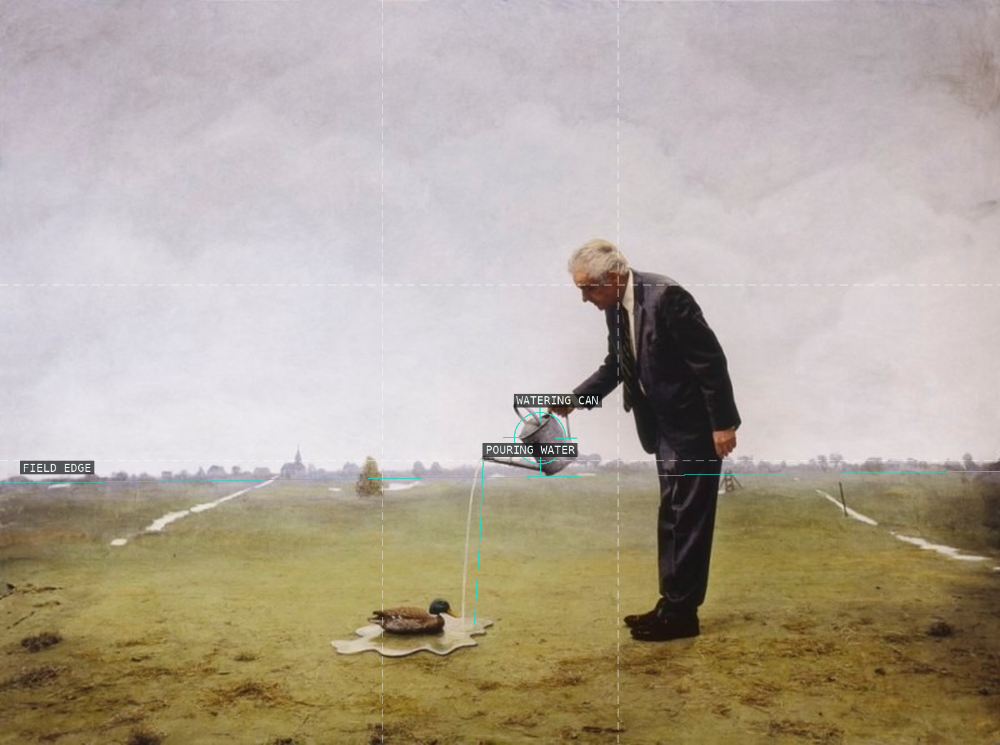
01-untitled-2006
The low field edge gives the small figure and duck an outsized stage of pale air.
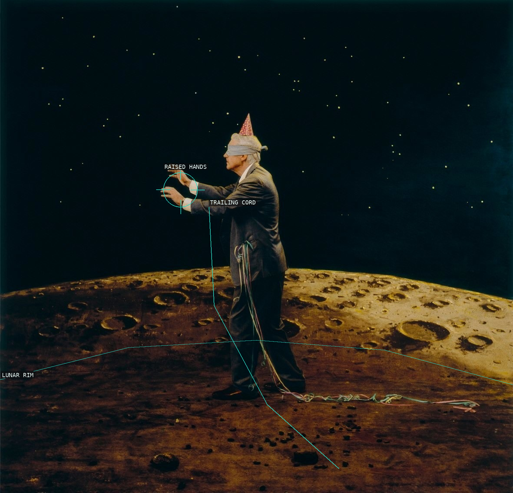
02-untitled-moon-2007
A solitary vertical body is held between a dark field and the shallow rise of the moon.
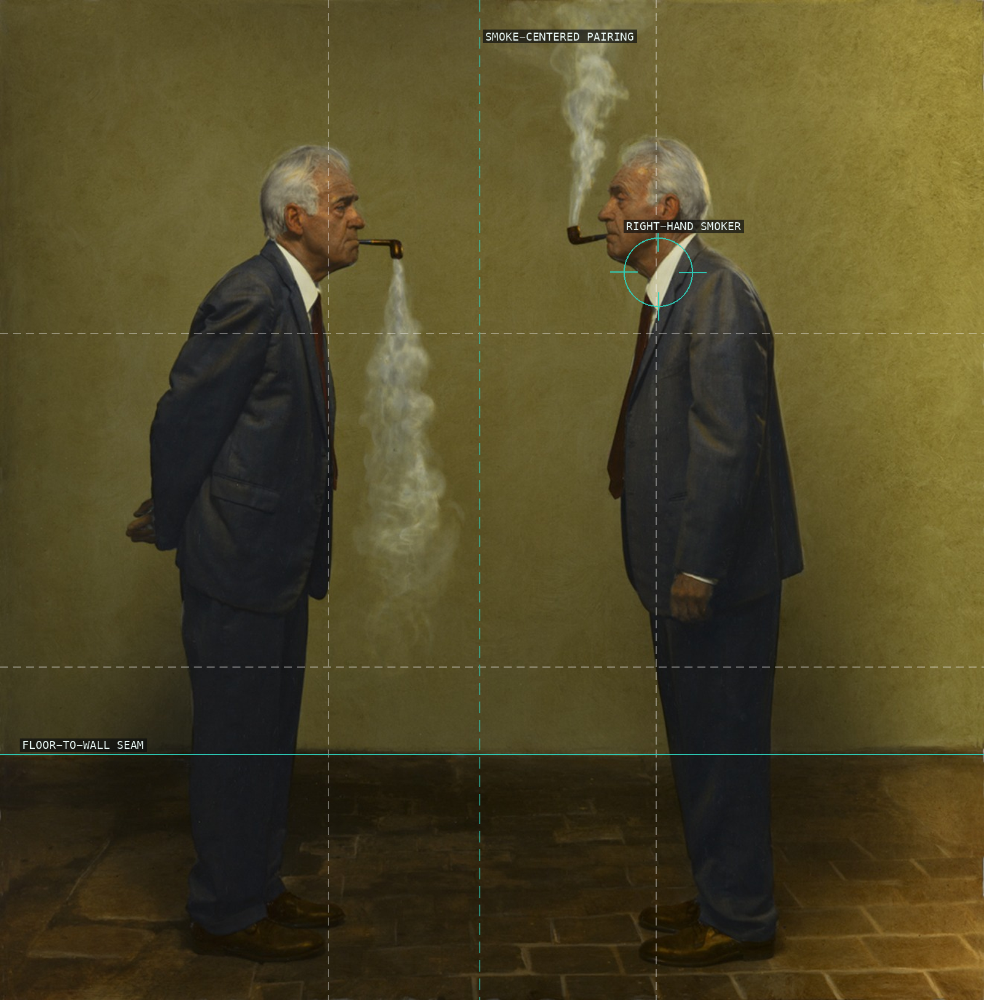
03-untitled-261-2015
Two near-matched figures make the central smoke interruption more conspicuous than either portrait alone.
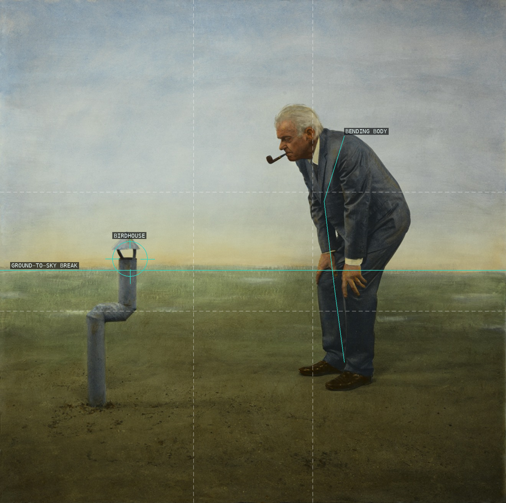
04-untitled-259-2015
The figure and improbable birdhouse are made small by the broad, almost unoccupied sky.
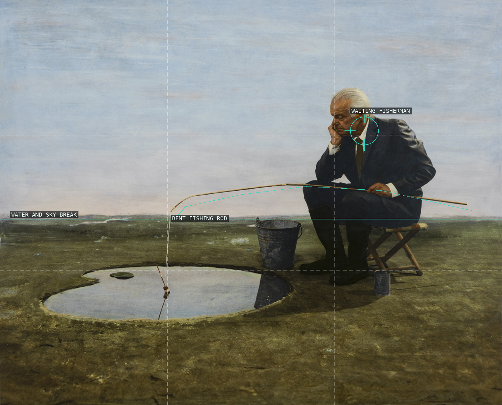
05-untitled-253-2014
A small seated figure at right makes the empty water and sky feel like a patiently held interval.
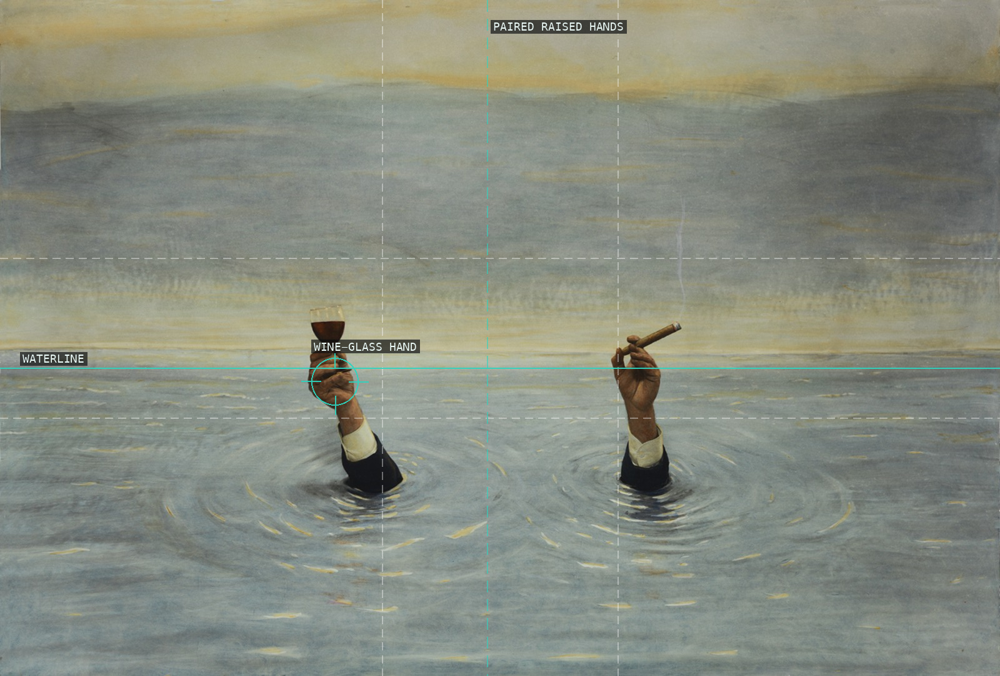
06-untitled-255-2015
A perfectly calm water field turns the small paired gestures into an intentionally absurd ceremony.
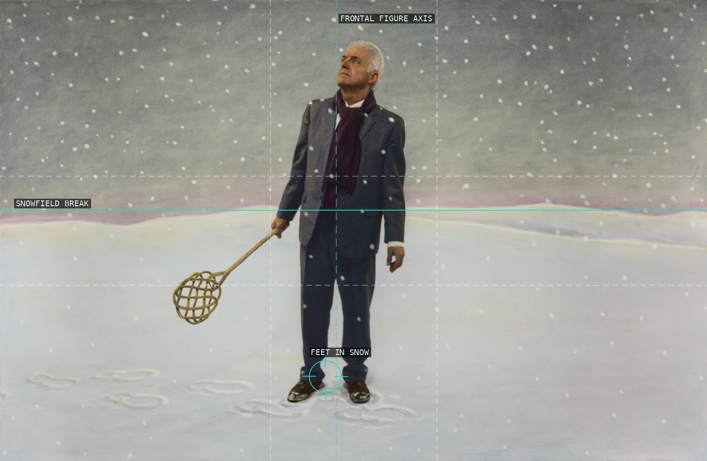
07-untitled-260-2015
The frontal body is held low in a spare snowfield whose scattered flakes resist a tidy backdrop.
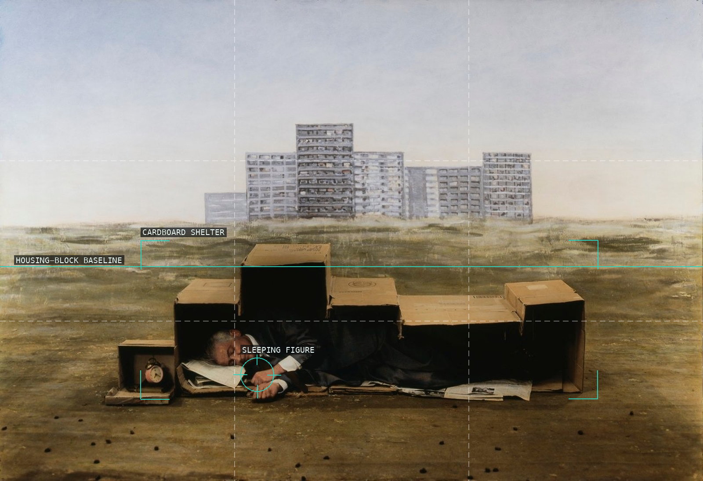
08-untitled-227-2008
The low improvised shelter makes the distant housing block register as a remote, impersonal backdrop.
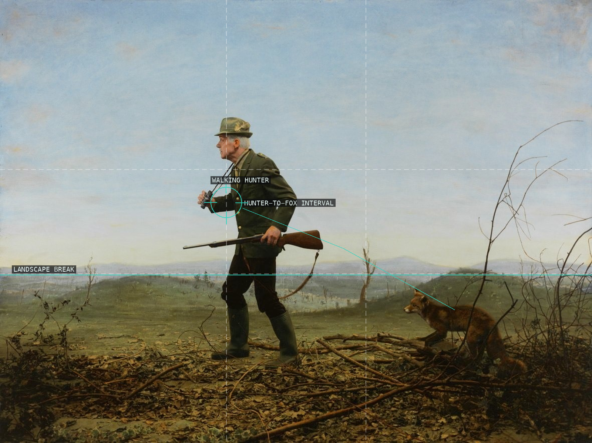
09-untitled-240-2010
The hunter's lateral movement is delayed by a shallow landscape that opens toward the fox at right.
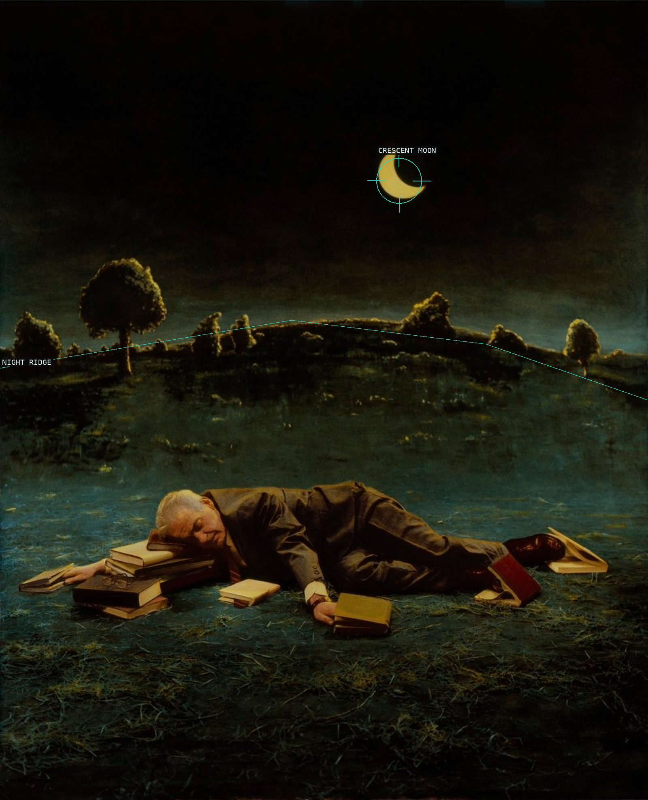
10-untitled-215-2007
A low sleeping body and its books make an oblique stage beneath a compressed nocturnal field.
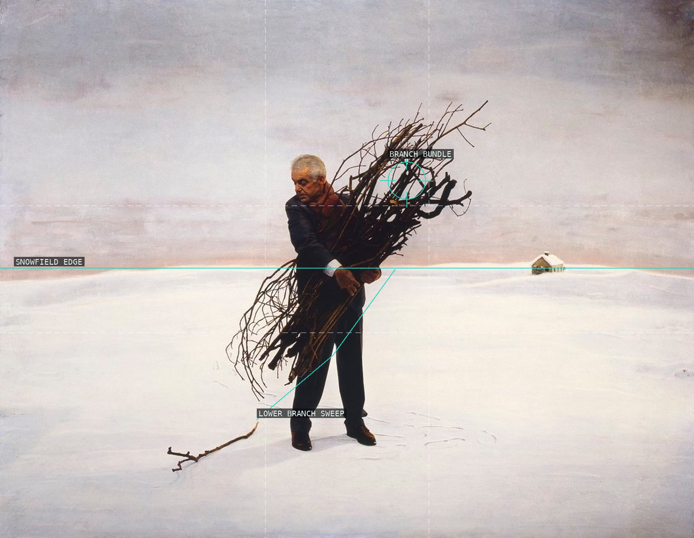
11-untitled-208-2004
The dark branch bundle cuts across a pale field, making the tiny distant house a measure of scale.
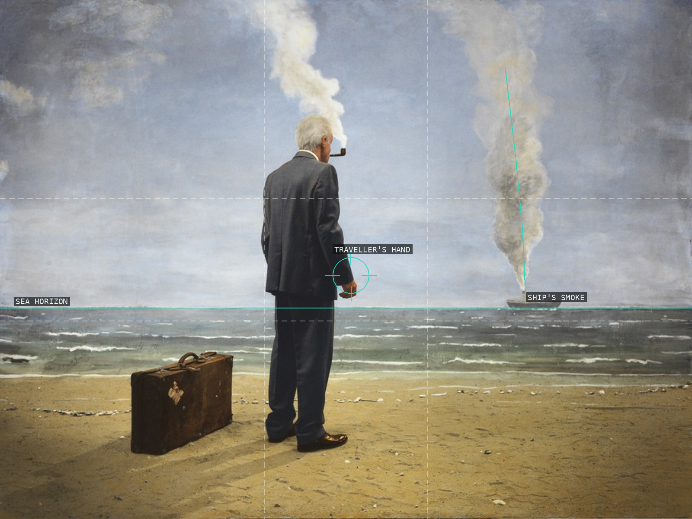
12-untitled-242-2011
The traveller and suitcase hold the foreground while the smoking ship remains a small disturbance at depth.